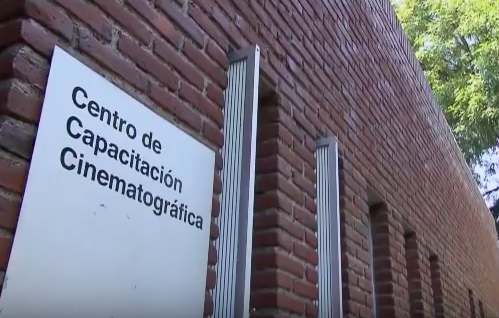

Carrera
Quiero estudiar cine fuera de colombia especificamente en la CCC de Mexico. Sólo hay una persona que puede decidir lo que voy a hacer, y soy yo mismo.
 |
 |
Metas a corto plazo |
Metas a Largo plazo |
|
|
Visiòn de vida
En un futuro quiero no solo ser alguien exitoso, que haya podido cumplir sus sueños, quiero llegar a ser feliz, con un hogar, familia. Tambien espero tener exito en la industria del cine, llegando a ser un gran cineasta con producciones exitosas y en lo posible ganar premios oscar.
Tambien me gustaria participar en la industria de los videojuegos, pues no solo es una forma de entretener o de tener un hobbie, tambien me parece que se pueden crear muy buenas historias a travez de este formato, otra cosa que me veo haciendo en un futuro es escribiendo libros, mas que nada me gustaria libros de fantasia realista, en los cuales no solo cuente la historia del personaje si no que representar un problema de la realidad a traves de un mundo fantastico.